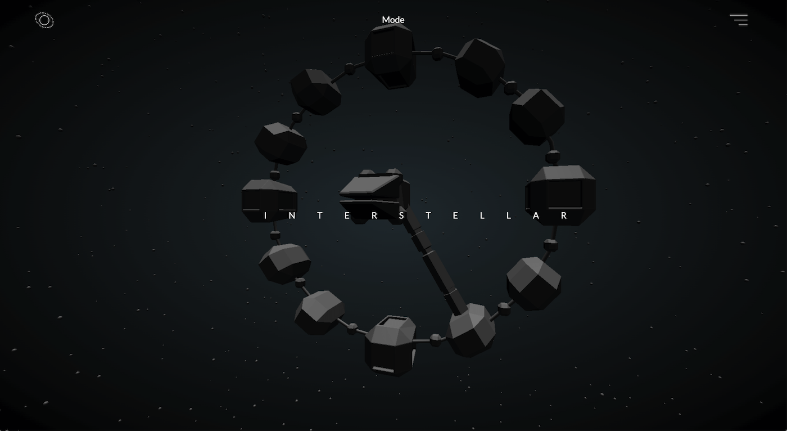
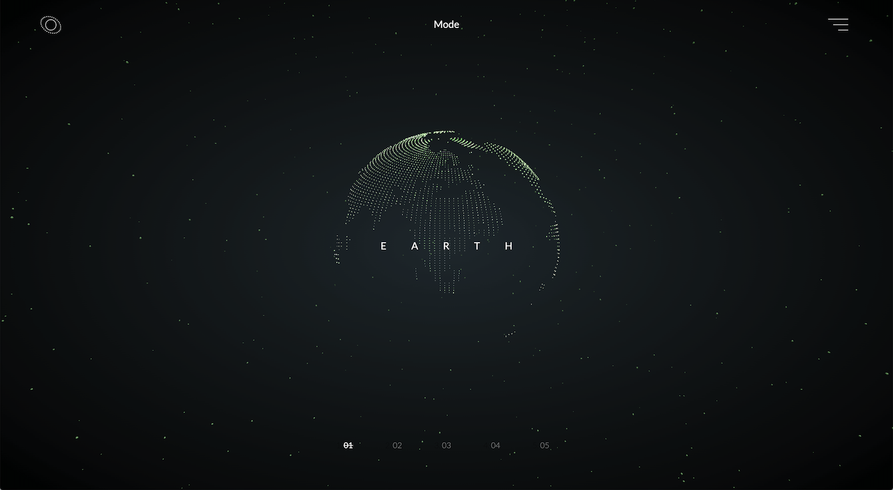
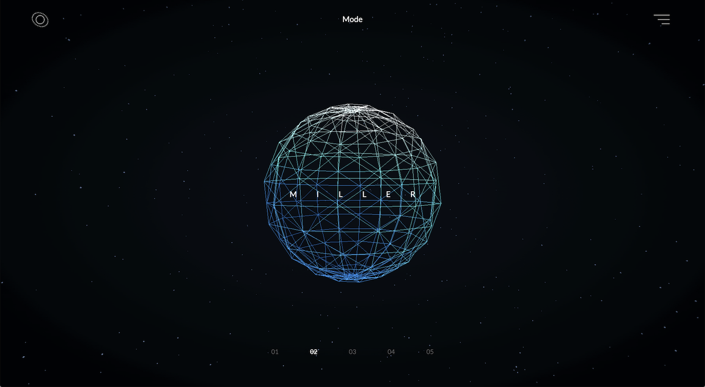
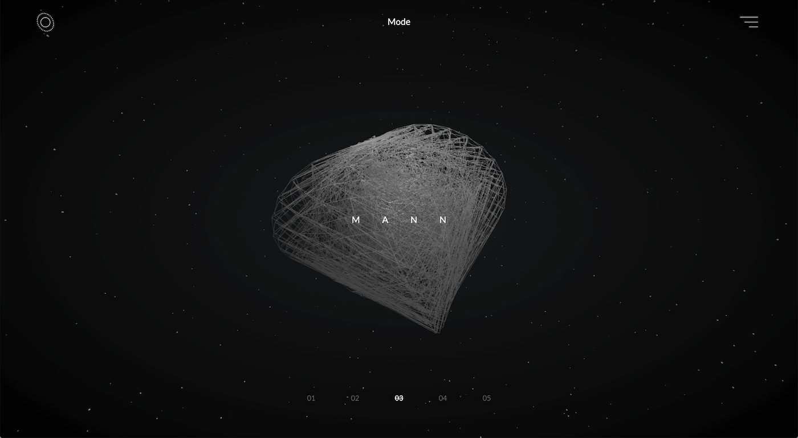
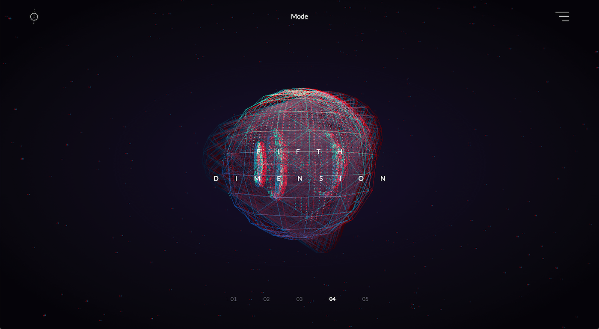
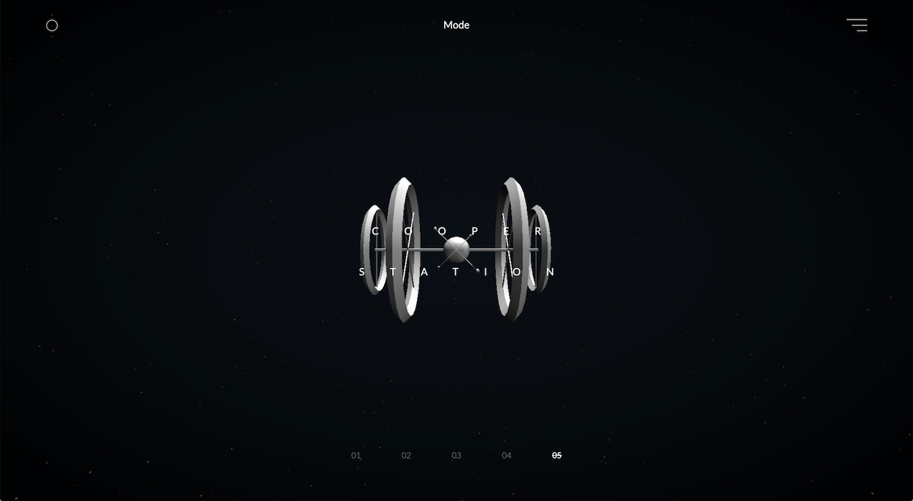

<!DOCTYPE html>
<html lang="ko">
<head>
    <meta charset="UTF-8">
    <meta name="viewport" content="width=device-width, initial-scale=1.0">
    <link rel="shortcut icon" type="image/x-icon" href="./img/shortcut.png"/>
    <title>송재혁 포트폴리오</title>
    <link rel="stylesheet" href="./style/reset.css">
    <link rel="stylesheet" href="./style/common.css">
    <link rel="stylesheet" href="./style/interstellar.css">
</head>


<body class="fadeInPage interstellar">

    
    <div class="contact_popup">
        <div class="contact_bg"></div>
        <div class="contact_wrap floating">
            <div class="logo text">XY&Z</div>
            <div class="contact_txt">


                <p class="text">
                    <span>송재혁</span> <br />
                    개발자
                </p>

                <ul class="tool text">
                    <li>Tel </li>
                    <li>Email </li>
                    <li>Web </li>
                </ul>

                <ul>
                    <li class="text">010 3932 5802</li>
                    <li><a class="text" href="mailto:wakij6587@naver.com">wakij6587@naver.com</a></li>
                    <li><a class="text" href="https://songjaehyeok5802.github.io/main.html">https://songjaehyeok5802.github.io/main.html</a></li>
                </ul>

            </div>
        </div>
    </div>

    <header>
        <a href="main.html" class="logo projectLink" >
            <span>X</span>
            <span>Y</span>
            <span>&</span>
            <span>Z</span>
        </a>
        <nav class="nav">
            <div class="nav_bar">
                <span class="nav_bar_1"></span>
                <span class="nav_bar_2"></span>
                <span class="nav_bar_3"></span>
            </div>

            <div class="menu">
                <ul>
                    <li class="about menu"><a data-txt="About"  class="projectLink" href="./about.html">About</a></li>
                    <li class="contact menu"><a data-txt="Contact" href="#">Contact</a></li>
                    <li class=" menu"><a data-txt="Resume" href="./resume/SongJaeHyeok.pdf" download>Resume</a></li>
                    <li class="menu"><a data-txt="Lab"  class="projectLink_Lab" href="./lab.html">Lab</a></li>
                </ul>
            </div>
        </nav>
    </header>

    <div class="changeWeb_main"></div>
    <div class="changeWeb_main_2"></div>

    <div class="changeLab_main"></div>
    <div class="changeLab_main_2"></div>

    <section class="portfolio">

        <div class="topBtn">Top</div>

        
        <div class="title">Interstellar</div>
        
        <article class="project">
            

            <div class="sticky_wrap">
                <div class="sticky_Title scrollAni">Interstellar</div>
                <div class="txtwrap scrollAni"> 
                    <ul>
                        <li><span> Tools / </span><br /> HTML / CSS / JavaScript / Three.Js / Maya</li>
                        <li><span> Date / </span><br /> 2020</li>
                    </ul>
                    <p class="web">
                        <span>Website /</span><br />
                        <a href="https://sjh-inter.github.io/Interstellar/main.html" target="_blank">웹사이트 바로가기 </a>
                    </p>
                    <p class="explain">
                        영화 인터스텔라 웹사이트 제작 프로젝트입니다.<br />
                        출연진, 줄거리를 소개하는 서브 페이지를 만들었고 우주의 느낌을 살리기 위해 어두운 톤으로 제작하였습니다. <br />
                        우주의 느낌을 전달하기에 2D 그래픽에서는 한계가 있는 것 같아 Three.js를 활용하여 3D컨셉을 추가하였습니다.<br />
                        웹페이지를 제작 중 디자인 부분에 있어 부족함을 느꼈습니다. 이후 프로젝트에서는 디자인을 더욱 신경 쓴 후 프로그래밍을 진행하였습니다.
                    </p>
                </div> 
                <div class="about scrollAni">
                    <video src="./video/inter_About.mp4" loop muted autoplay></video>
                </div>
                <div class="story scrollAni">
                    <video src="./video/inter_story.mov" width="700px" loop muted autoplay></video>
                </div>

                <p class="explain3D scrollAni">
                    Three.Js를 활용한 3D 웹페이지입니다.<br />
                    배경에는 반복문을 이용하여 구체를 생성 후 퍼뜨려서 우주의 느낌을 주었습니다.<br />
                    중앙에는 기본으로 제공하는 도형들을 조작하여 배치하였습니다. 원하는 오브젝트가 있을 경우 3D 프로그램 Maya에서 모델링 후 가져왔습니다.<br />
                    공간감을 극대화하기 위하여 오브젝트들을 와이어 프레임으로 보여주었으며 컨트롤러를 이용하여 마우스로 카메라를 이동 가능하게 만들었습니다. <br /> 
                    필요시에는 three.js에서 제공하는 글리치 효과를 주어 신비로움을 더했습니다.
                </p>
                <div class="main3D scrollAni">
                    
                </div>


                <div class="story3D">
                    <div class="story_wrap">
                        
                        
                        
                        
                        
                    </div>
                </div>


             </div>
        </article>

    </section>


    <footer>
        <a href="./dream.html" class="projectLink">Next</a>
    </footer>

    <script src="./vendor/jquery.min.js"></script>
    <script src="./vendor/jquery.easing.min.js"></script>
    <script src="./script/common.js"></script>
    <script src="./script/interstellar.js"></script>
</body>


</html>